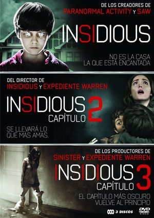
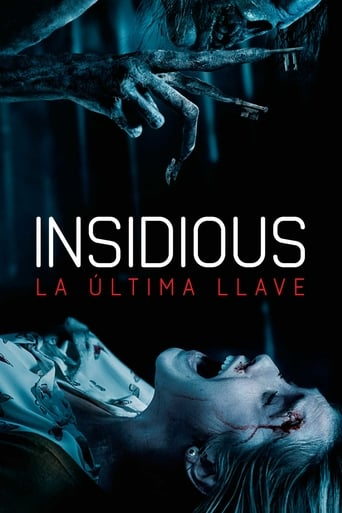

Las mejores Peliculas de terror y ciencia ficción:
Estas son las peliculas que marcaron la historia del cine y te sorprenderan
INSIDIOUS:
Insidious o La noche del demonio es una película de terror sobrenatural de 2010 dirigida por James Wan y Leigh Whannell. La saga está formada por cuatro películas:
Insidious: Protagonizada por Patrick Wilson, Rose Byrne y Barbara Hershey. La historia se centra en una pareja cuyo hijo entra inexplicablemente en estado de coma y se convierte en un "recipiente para fantasmas" que quieren habitar su cuerpo en una dimensión astral.
Insidious: Chapter 2: La película está protagonizada por Wilson y Byrne repitiendo sus papeles como Josh y Renai Lambert, respectivamente. En esta ocasión, la familia deberá de encontrar lo que les mantiene unidos con la dimensión astral y que provoca que los espíritus sigan aterrorizándoles.
Insidious: Chapter 3: En esta ocasión está escrita y dirigida por Whannell. La película es una precuela de las dos primeras películas. Está protagonizada por Stefanie Scott, Dermot Mulroney y Lin Shaye. La trama se aleja de la familia Lambert y se centra en el caso de una adolescente, Quinn, quien es perseguida por un demonio tras intentar contactar con su madre, Lillith, quien murió.
Insidious: The Last Key La parapsicóloga Elise Rainier, capaz de ponerse en contacto con los muertos y luchar contra los espíritus demoniacos, se enfrenta esta vez a aterradoras apariciones que tienen lugar en Nuevo México, en la que fue su antigua casa familiar. Con el objetivo de ayudar a una familia recién instalada, que sufre escalofriantes incidentes paranormales, Elise tendrá que enfrentarse a los espíritus y las fuerzas del mal que habitan el hogar de su infancia. La parapsicóloga deberá valerse de sus habilidades para purgar esta casa de los espíritus tenebrosos.
 
THE CONJURING 2
Ed y Lorraine Warren han sido requeridos para solucionar un nuevo caso paranormal, uno donde Lorraine deberá transportarse a otro plano astral, buscando descubrir los motivos de los asesinatos de la mítica casa de Amityville. En esa búsqueda, se enfrenta a una nueva y poderosa entidad, que toma forma de una monja, quien le lanza una terrible profecía. Después de esto, Lorraine decide retirarse, incapaz de seguir combatiendo más casos. Pero pronto sus servicios serán requeridos, cuando en el municipio londinense de Enfield, Inglaterra la familia Hodgson sea amenazada por Janet Hodgson, una niña de once años que se enfrenta a una terrible entidad en la figura de un hombre de 72 años. A pesar de las advertencias, de las visiones y de la probabilidad de que todo se trate de un elaborado engaño, el matrimonio Warren deberá prepararse para enfrentar su caso más peligroso. El Conjuro 2 está inspirada en el famoso caso real sobre el poltergeist de Enfield.

AVENGERS ENDGAME
Después de los devastadores eventos ocurridos en Vengadores: Infinity War, el universo está en ruinas debido a las acciones de Thanos, el Titán Loco. Tras la derrota, las cosas no pintan bien para los Vengadores. Mientras Iron Man vaga en soledad junto a Nebula en una nave lejos de la Tierra, el grupo encabezado por Capitán América, Viuda Negra, Hulk y Thor deberá tratar de revertir los efectos de la catástrofe provocada por Thanos Los Vengadores deberán reunirse una vez más para deshacer sus acciones y restaurar el orden en el universo de una vez por todas. Esta vez, contarán también con aliados como Ojo de Halcón y Capitana Marvel, además de Ant-Man, que presumiblemente podría haber estado atrapado en el Reino Cuántico. Juntos, se prepararán para la batalla final, sin importar cuáles sean las consecuencias.
CAPTAIN AMERICA: THE WINTER SOLDIER
Mientras que Capitán America El primer vengador nos sumergía en los primeros años del universo Marvel a través de la traslación del legendario cómic a la gran pantalla, ahora el héroe regresa con Capitán América: El soldado del invierno. Esta historia se desarrolla en la actualidad y tiene como protagonistas a Chris Evans, Samuel L. Jackson y Scarlett Johansson, entre otros.
La trama de la historia sigue girando alrededor del soldado Steve Rogers, que mantiene su alianza con Nick Furia y con la agencia secreta SHIELD, e intenta, además, involucrarse en el mundo moderno. Sin embargo, hay algo que Rogers no se imaginaba: un antiguo camarada suyo, conocido como el Soldado de Invierno, anteriormente Bucky Barnes, es encontrado por fuerzas enemigas en un lago congelado. Los villanos de la función deciden sacar partido del hallazgo y le adiestran para aniquilar a quienes ellos consideran necesario. Capitán América, su amigo El Halcón y La Viuda Negra unirán sus fuerzas para combatir contra las fuerzas del mal en esta gran aventura.